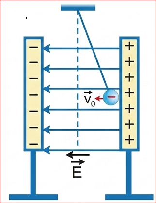
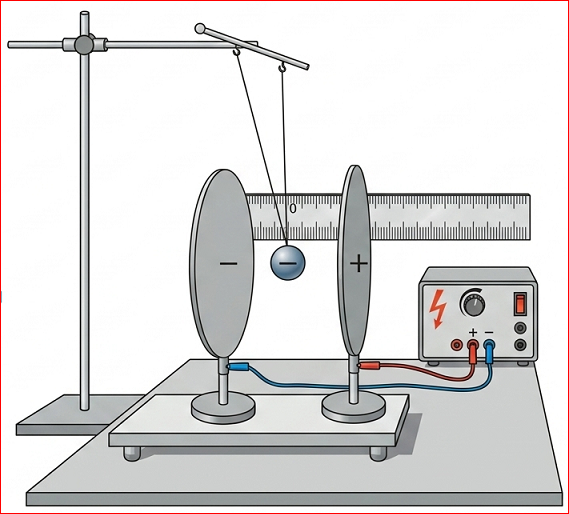
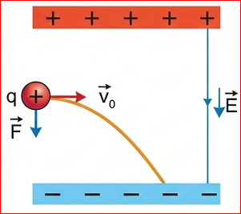

Chương III: ĐIỆN TRƯỜNG
Chúng ta đã biết, cường độ điện trường tại mỗi điểm thường sẽ có giá trị khác nhau. Vậy có tồn tại những vùng điện trường mà cường độ điện trường tại mỗi điểm có giá trị như nhau không?
Điện trường đều là điện trường mà cường độ điện trường tại mỗi điểm có giá trị bằng nhau về độ lớn, giống nhau về phương và chiều.

Hình 18.1. Các đường sức điện của điện trường đều
Chúng ta có thể tạo ra điện trường đều bằng cách sử dụng hai bản kim loại được đặt song song và cách nhau một khoảng \( d \). Hai bản kim loại này có hình dạng và kích thước giống hệt nhau, kích thước của hai bản lớn so với khoảng cách giữa chúng. Tích điện trái dấu cho hai bản kim loại này, khi đó hiệu điện thế giữa hai bản là \( U \) (Hình 18.2).

Hình 18.2. Thí nghiệm đo cường độ điện trường giữa hai bản phẳng
Trong thí nghiệm này dây treo điện tích \( q < 0 \) luôn lệch so với phương thẳng đứng một góc không đổi tại mọi điểm trong không gian giữa hai bản kim loại. Điều đó chứng tỏ điện trường giữa hai bản kim loại là đều.
Đặc điểm đường sức điện:
? Biểu diễn các đường sức điện giữa hai bản phẳng nhiễm điện trái dấu đặt song song.
Cường độ điện trường:
Cường độ điện trường giữa hai bản phẳng nhiễm điện trái dấu đặt song song có độ lớn bằng tỉ số giữa hiệu điện thế giữa hai bản phẳng và khoảng cách giữa chúng:
\( E = \frac{U}{d} \)
Trong đó:
Xét một điện tích \( q > 0 \) bay vào vùng điện trường đều giữa hai bản phẳng theo phương vuông góc với các đường sức (phương nằm ngang).

Hình 18.3. Quỹ đạo chuyển động của điện tích trong điện trường đều
Khi một điện tích bay vào điện trường đều theo phương vuông góc với đường sức, dưới tác dụng của lực điện trường:
Kết quả là vận tốc của điện tích liên tục đổi phương và tăng dần độ lớn, quỹ đạo chuyển động trở thành đường parabol.
🖐️ HOẠT ĐỘNG / NÊU VẤN ĐỀ:
Dựa trên các đặc điểm chuyển động đã nêu, hãy chứng minh quỹ đạo chuyển động của điện tích là một cung Parabol.
Chọn hệ trục Oxy như hình 18.3. Giả sử điện tích \( q \) có khối lượng \( m \) bay vào với vận tốc \( v_0 \) dọc theo trục Ox.
1. Phương Ox (vuông góc với \( \vec{E} \)): Lực \( F_x = 0 \Rightarrow a_x = 0 \). Chuyển động thẳng đều: \( x = v_0 t \Rightarrow t = \frac{x}{v_0} \).
2. Phương Oy (dọc theo \( \vec{E} \)): Lực điện \( F_y = qE \Rightarrow a_y = \frac{qE}{m} \). Chuyển động biến đổi đều: \( y = \frac{1}{2} a_y t^2 = \frac{1}{2} \frac{qE}{m} t^2 \).
3. Thay \( t \) vào \( y \): \( y = \frac{qE}{2mv_0^2} x^2 \). Vì \( \frac{qE}{2mv_0^2} \) là hằng số, nên đây là phương trình của đường parabol.
Ống phóng tia điện tử (CRT) trong các tivi thế hệ cũ sử dụng điện trường đều giữa các bản cực để lái chùm electron đập vào màn hình huỳnh quang tạo ra hình ảnh.
Mô tả được ảnh hưởng của điện trường đều lên chuyển động của một điện tích và giải thích nguyên tắc hoạt động của các thiết bị lái tia điện tử.
Câu 1: Đặc điểm nào sau đây KHÔNG phải của điện trường đều?
Câu 2: Công thức liên hệ giữa cường độ điện trường \( E \) và hiệu điện thế \( U \) là:
Câu 3: Đơn vị của cường độ điện trường là:
Câu 4: Quỹ đạo của một điện tích khi bay vuông góc vào điện trường đều là:
Câu 5: Một điện tích âm bay vào điện trường đều giữa hai bản nằm ngang, bản trên dương bản dưới âm. Lực điện tác dụng lên nó có chiều:
Bài 1: Giữa hai bản phẳng song song cách nhau 2 cm có hiệu điện thế 1000 V. Tính cường độ điện trường giữa hai bản.
Tóm tắt: \( d = 2 \, \text{cm} = 0,02 \, \text{m} \); \( U = 1000 \, \text{V} \).
Áp dụng công thức: \( E = \frac{U}{d} = \frac{1000}{0,02} = 50.000 \, \text{V/m} \).
Bài 2: Một chùm ion âm \( (m = 2,833 \cdot 10^{-26} \, \text{kg}, q = -1,6 \cdot 10^{-19} \, \text{C}) \) bay vào điện trường đều bề mặt Trái Đất \( E = 114 \, \text{V/m} \). Xác định gia tốc của ion.
Lực điện tác dụng lên ion: \( F = |q|E = 1,6 \cdot 10^{-19} \cdot 114 = 1,824 \cdot 10^{-17} \, \text{N} \).
Gia tốc: \( a = \frac{F}{m} = \frac{1,824 \cdot 10^{-17}}{2,833 \cdot 10^{-26}} \approx 6,44 \cdot 10^8 \, \text{m/s}^2 \).
Bài 3: Cần đặt một hiệu điện thế bao nhiêu vào hai bản phẳng cách nhau 5 cm để tạo ra điện trường \( 2000 \, \text{V/m} \)?
Tóm tắt: \( d = 5 \, \text{cm} = 0,05 \, \text{m} \); \( E = 2000 \, \text{V/m} \).
Áp dụng: \( U = E \cdot d = 2000 \cdot 0,05 = 100 \, \text{V} \).